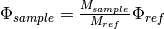

SANSBeamFluxCorrection dialog.
Table of Contents
| Name | Direction | Type | Default | Description |
|---|---|---|---|---|
| InputWorkspace | Input | MatrixWorkspace | Mandatory | Workspace to be corrected |
| InputMonitorWorkspace | Input | MatrixWorkspace | Mandatory | Workspace containing the monitor counts for the sample data |
| ReferenceFluxFilename | Input | string | Mandatory | File containing the reference flux spectrum. Allowed extensions: [‘_event.nxs’, ‘.nxs’, ‘.nxs.h5’] |
| ReductionProperties | Input | string | __sans_reduction_properties | |
| OutputWorkspace | Output | MatrixWorkspace | Mandatory | Corrected workspace. |
| OutputMessage | Output | string |
Performs beam flux correction for TOF SANS data.
The correction goes as follows:
where

Example - Performing a Beam Flux Correction on Dummy Data
# Create some dummy data, as well as a dummy monitor ws for EQSANS.
x = [1,2,3,4,5,6,7,8,9,10,11]
y = 491520*[0.1]
ws = CreateWorkspace(DataX=x,DataY=y,DataE=y,NSpec='49152',UnitX='Wavelength')
LoadInstrument(ws, InstrumentName="EQSANS", RewriteSpectraMap=True)
monitor = SumSpectra(ws)
# Do the correction, dragging in the file which contains the reference flux spectrum.
corrected = SANSBeamFluxCorrection(ws, InputMonitorWorkspace=monitor, ReferenceFluxFilename="SANSBeamFluxCorrectionMonitor.nxs")
print("The expected value of each bin should be {:.11e}.".format(0.1/(49152*0.1)/(49152*0.1)))
print("The actual value of the first bin is {:.11e}.".format(corrected[0].readY(0)[0]))
Output:
The expected value of each bin should be 4.13921144274e-09.
The actual value of the first bin is 4.13921144273e-09.
Categories: AlgorithmIndex | Workflow\SANS\UsesPropertyManager | CorrectionFunctions\InstrumentCorrections
C++ header: SANSBeamFluxCorrection.h (last modified: 2020-04-07)
C++ source: SANSBeamFluxCorrection.cpp (last modified: 2020-04-07)